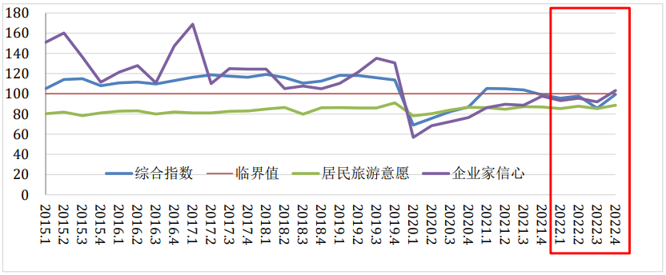
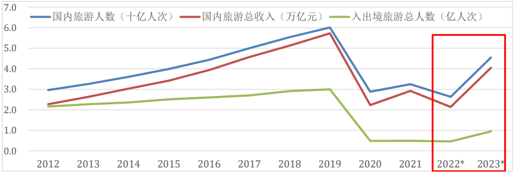
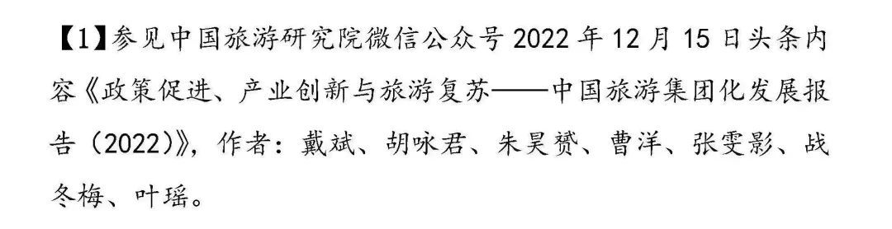
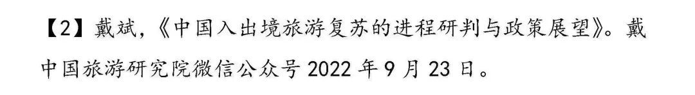

- 2023-01-01 08:15:07
要点导览
最坏的日子已经过去，最好的时光即将到来。我们挥别２０２２，终结波动下行的消费预期，我们迎来２０２３，重构复苏向上的市场信心。
●政策千万条，市场第一条。
●我们有理由将２０２３年旅游经济预期由“谨慎乐观”上调为“乐观”，全年将呈现“稳开高走，加速回暖”的态势，季度增速有望环比走高。
●市场复苏不是回到过去，疫情对旅游偏好的影响将深刻改变旅游投资方式和供给行为。
●从来都是旅游者在定义旅游业，而不是相反。
●经此一疫，城市的旅游消费中心和市场基础支撑地位更加突出，都市休闲、周边和近程旅游已经成为旅游投资基础支撑和创业创新的主引擎。
●景观之上是生活，旅游者在行程中更加看重文化内涵和场景体验，旅游目的地的价值重点正在从风景转向场景。
●新时期旅游产业政策的价值取向要及时从之前的托举、纾困、托举转向对旅游投资机构和市场主体的创新引导上来。
●中国正在加速重归世界旅游体系，重构世界旅游经济格局，正在迎来从旅游资源大国到旅游大国再到旅游强国的新时代。
●新时代的国家旅游战略，不可能，也没有必要追求持续性的服务贸易顺差，更没有必要对每个国家在什么时候都追求顺差。
●旅游业要将推进人的全面发展和精神层面的共同富裕作为新时代的发展目标，不仅要强调经济属性，也要强调文化内涵；不仅有产业功能，也有事业目标；不仅要市场供给，也要公共服务。
●坚持以人民为中心的发展理念，将“游客满意度高不高”“市场主体竞争力强不强”“发展动能新不新”作为新时代旅游业高质量发展的衡量指标，在质的有效提升基础上寻求量的合理增长。
●无论是各级政府主导的旅游目的地建设，还是各类市场主体的旅游投资和商业运营，都要发展绿色旅游和文明旅游。
随着疫情防控“二十条”和“新十条”的颁布实施，特别是国务院联防联控机制宣布“乙类乙管”和中外人员往来新规后，旅游业迎来了抗疫复苏的战略转折点：最坏的日子已经过去，最好的时光即将到来。２０２２年是新冠疫情以来旅游市场最困难的一年，也是最能体现旅游业韧性的一年，在政策托底和产业托举下，以旅游集团２０强为代表的市场主体“虽千万人，吾往矣”，以逆势创新赢得了行业的尊严。２０２３年是贯彻落实党的二十大精神，以中国式现代化全面推进中华民族伟大复兴的开局之年，也是坚持以文塑旅、以旅彰文，推进文化和旅游深度融合的破题之年。终结萧条、走向繁荣，管控预期、释放潜力，提振信心、扩大投资，不断满足广大游客品质化和多样性的旅游需求，重构旅游业高质量发展新格局，将是全年旅游工作的主基调。
一、终结波动下行的消费预期，重构复苏向上的市场信心
２０２２年疫情散发贯穿全年，各地防控措施竞相收紧，居民出游心态更趋谨慎。尽管１１月１１日优化疫情防控的“二十条”和１２月７日疫情防控“新十条”，标志着全国疫情防控导向发生了根本变化，但是各地的感染高峰还是让政策翘尾效应失去了最后的窗口期。中国旅游研究院（文化和旅游部数据中心）专项监测表明：２０２２年全国旅游经济运行综合指数（ＣＴＡ－ＴＥＰ）位于临界值以下，１至４季度指数值分别为９５．６０、９７．８２、８５．５９和９９．３２，季度均值为９４．５８，较２０２１年低８．６４。其中，居民出游意愿均值为８６．７３，与上年基本持平，而企业家信心指数则连续三个季度低于临界值。预计２０２２年全国国内旅游人数和国内旅游收入同比下降２０－２５％，恢复至疫前的四成左右。

图１：２０１５－２０２２年分季度国内旅游景气
及居民出游意愿指数
＊资料来源：旅游经济文化和旅游部重点实验室
１２月２６日，国务院联防联控机制发布《关于印发对新型冠状病毒感染实施“乙类乙管”总体方案的通知》，自２０２３年１月８日起，对新型冠状病毒感染实施“乙类乙管”，围绕“保健康、防重症”，采取相应措施，最大限度保护人民生命安全和身体健康，最大限度减少疫情对经济社会发展的影响。政策千万条，市场第一条。只要终结了城乡居民流动和接触性消费的限制措施，加上预期内的感染高峰过后，城乡居民的出游意愿很可能于第一季度末由“谨慎”转向“积极”。我们有理由将２０２３年旅游经济预期由“谨慎乐观”上调为“乐观”，全年将呈现“稳开高走，加速回暖”的态势，季度增速有望环比走高。受探亲访友、民俗休闲、亲子研学、冰雪和避寒需求增长的拉动，即将到来的春节假期将成为疫情以来最值得期待的春节旅游市场。清明节、端午节、劳动节假日旅游需求，加上商务旅行的刚性增长，第二季度旅游市场将进入预期转强和供给优化的新通道，暑期则有望迎来全面复苏，避暑旅游很可能接近甚至达到疫情同期水平。预计２０２３全年国内旅游人次和国内旅游收入恢复至疫前的７０－７５％，入出境旅游人次有望恢复到疫前的三到四成。

图２：２０１２－２０２３年旅游市场主要指标趋势
＊资料来源：旅游经济文化和旅游部重点实验室
发展建议（一）
加强预期管控，释放消费潜力，持续扩大国内旅游市场规模。
疫情向后退，旅游向前进。贯彻中央经济工作会议精神，文化和旅游系统要主动担当，积极作为，充分发挥旅游在扩大内需特别是最终消费中的突出作用，做好旅游领域“稳增长、稳就业、稳物价”工作。推出更多优秀的文艺作品和优质旅游产品，引导游客“治愈”与“自愈”相结合，逐步把旅游意愿和消费预期调整到应有的水平。及时将旅游工作的重点调整到城市中来，重点推进国有重点旅游景区特别是城市公园降价和免费，国有博物馆和美术馆免费开放，分类分阶段激活城镇居民的都市休闲、周边旅游、近程旅游和中远程旅游、出境旅游需求。以节假日为节点，以避暑、冰雪、研学、红色、乡村旅游为支撑，持续释放城乡居民旅游消费潜力。重点抓好春节假日旅游市场供给，特别是冰雪、避寒、民俗、非遗、探亲访友、休闲娱乐、亲子研学、自驾旅游等旅游产品供给，抓住七八月份避暑旅游和研学旅游时间窗口期，争取国内旅游市场尽快进入全面恢复新通道。
二、终结传统旅游发展模式，重构现代旅游产业体系
随着政策效应从需求向供给的传导，会有越来越多的旅游运营商和投资机构增强复苏信心，开始人员召回、产品研发和供应链重组等全面复业的准备。这是国家希望的，也是人民期盼的，旅游业界应当也必须与此相向而行。需要指出的是，市场复苏不是回到过去，疫情对旅游偏好的影响将深刻改变旅游投资方式和供给行为。经此一疫，“人山人海吃红利，圈山圈水收门票”的时代已经过去，“走马观光逛景点，扎店购物吃回佣”的模式更不可能让旅游业重回黄金时代。消费是理解旅游经济的钥匙，也是行政主体和市场主体，特别是市场主体一切创业创新创造活动的出发点。疫情三年，改革开放四十多年，由此上溯到１９世纪四十年代近代旅游业起源与演化的历史，从来都是旅游者在定义旅游业，而不是相反。在巨大的市场转型和产业变革面前，我们能够做的，也必须要做的就是适应与变革，适应消费需求和旅游的变化，以科技创新、市场创新、管理创新和产品创新推进产业的变化。市场从来是都是适者生存，商业则是资本、技术、人力资源、信息、数据、意志力、创新力等多种要素和能力的综合博弈，它会为最终的胜出者戴上桂冠、献上颂歌并勒石记功，却从不会因为退场者的悲伤叹息而伫足。
发展建议（二）
提振信心，引导投资，持续完善旅游基础设施和公共服务体系；面向新需求，培育新动能，引导传统旅游企业的现代化转型和新型市场主体的实体化运营。
消费在变化，供给要改革。中央经济工作会议以后，发改、财政、金融、国资和宣传部门将会围绕中央重点部署的国家重大工程加大建设力度，五大国家文化公园、世界级旅游城市、世界级旅游景区和度假区、国家级旅游城市和街区、文化和旅游深度融合，以及世界一流企业等。文化和旅游部门要在规划引领、建设指导和市场宣传方面积极作为，主动发声，切实加强对区域性重点工作的指导，包括但不限于青海国际生态旅游目的地、宁夏贺兰山东麓世界葡萄酒旅游目的地、辽宁东北亚国际旅游目的地、阿尔山国际旅游度假区等。２０２３年是“十四五”规划承上启下的关键一年，规划目标和相关任务受疫情影响在前两年有所耽搁。要把工作重心放到“１＋２＋８”规划体系落实上来，根据党中央国务院最新要求，结合市场发展情况对相关规划内容进行评估调整。
经此一疫，城市的旅游消费中心和市场基础支撑地位更加突出，都市休闲、周边和近程旅游已经成为旅游投资基础支撑和创业创新的主引擎。本地旅游休闲的市场规模、消费频次和增长速度，将是旅游投资和项目建设的空间布局，以及运营基地和市场节点选择时优先考量的因素。相对于远离客源市场的传统旅游目的地和旅游景区度假区，那些人口净流入的城市，尤其是常住人口超过１０００万人、地区生产总值超过１万亿元、地方财政收入超过１０００亿元、社会商品零售总额和居民存款高的大城市及其周边１００公里范围内的城市和乡村，将会成为旅游增量投资高地和创业创新策源地。这并不意味着广大中西部和东北地区，以及乡村没有投资机会，而是会更加依赖来自基础设施和公共服务领域的政府投资和财政、发改和金融部门的政策支持，以及中央和地方国有旅游集团的战略投资，商业机构和民营企业更加强调现金流的稳定，对加杠杆的投资模式会更加谨慎。
景观之上是生活，旅游者在行程中更加看重文化内涵和场景体验，旅游目的地的价值重点正在从风景转向场景。中国旅游研究院１２月１１日发布的《潮品牌新势力：２０２２中国旅游创业创新案例》表明：投资机构和旅游运营商在细分市场上加大了融合创新的力度，露营经济、近郊度假、社群旅游、旅游＋轻体育、时尚餐饮、艺术酒店等，正在用优质的供给创造全新的需求。从错峰旅游到反向旅游，再到囤旅游，是新时代旅游者追求性价比、个性化和品质体验的理性选择的结果。疫情期间，人们欣赏身边的美丽风景，体验日常的美好生活，在老地方寻找新玩法。疫情过后，为都市休闲和周边旅游而购买的帐篷、冲锋衣、烧烤架、野餐垫、滑雪板、天文望远镜等休闲装具不会闲置，当地玩乐的朋友圈也会保持相应的活跃度，进而影响中远程旅游目的地围绕生活方式而规划项目和研发产品。因为科技创新和数字化转型，一个面向新需求、依托新动能，分工深化和链条延展的现代旅游业体系正在加速形成。
发展建议（三）
指导各地利用相对积极的财政政策、金融政策、社会保障政策和产业政策，合理运用优惠、减免、奖补等方法刺激旅游经济复苏增长。
党的二十大报告提出，“优化民营企业发展环境，依法保护民营企业产权和企业家权益，促进民营经济发展壮大”“支持中小微企业发展，深化简政放权、放管结合、优化服务改革”，继国务院常务会议多次强调“要尽可能吸引民间投资”后，２０２２年１１月７日，国家发展改革委发布《关于进一步完善政策环境加大力度支持民间投资发展的意见》，提出支持民间投资参与１０２项重大工作等项目建设，支持制造业民间投资转型升级等２１条举措。新时代的旅游集团和旅行服务商、旅游住宿商、旅游景区和度假区等各类旅游业态，要更加强调自身作为企业的共同属性，用足用好各类普惠性的财政、发展、金融、社会保障和产业政策。
旅游业没有天然的嫡系部队，谁能保障人民的旅游权利，为广大游客提供高品质的游前、游中和游后服务，谁就是旅游系统的嫡系部队；旅游业也没有一成不变的主力军，谁有强大的竞争力、创新力和社会影响力，谁就是旅游业的主力军。
基于旅游供给变迁的系统研究和产业演化逻辑的科学把握，新时期旅游产业政策的价值取向要及时从之前的托举、纾困、托举转向对旅游投资机构和市场主体的创新引导上来。回顾过去三年的政策取向［１］，２０２０年主要是稳市场主体，免征增值税、税费优惠、旅游服务质量保证金、住房公积金、担保、贷款、失业保险、复产、金融服务等，以及针对旅行社、在线旅行商（ＯＴＡ）实施退费免税等政策，帮助企业“活下去”。２０２１年重点保就业，政策关键词包括稳岗扩岗、社会保险、人员培训、个人所得税、住房公积金、增值税、免征税等。２０２２年重点扩消费，关键词包括消费券、消费业态、营销宣传、零售、产业链、科技赋能等。

发展建议（四）
保持助企纾困政策的延续性，避免市场主体未复工先失血。
旅游市场复苏需要过程，旅游企业经营情况改善有快有慢，不能疫情管控放开了，对旅游企业的帮助扶持就不管不顾了。减税降费、缓缴社保等政策大多截至２０２２年底，随着社保基数上涨，需要补缴的社保费用负担陡增。按照目前的政策规定，２０２３年３月３１日后旅行社补缴保证金压力很大。使得２０２３年很多旅游企业会迎来刚性成本兑付“洪峰”。要适时延长涉旅优惠政策时限，错开政策到期期限，鼓励质保金保险产品研发推广。要转危为机，继续推动《关于金融支持文化和旅游行业恢复发展的通知》《关于进一步完善政策环境加大力度支持民间投资发展的意见》等政策文件落地，解决长期困扰旅游企业间接融资获批难、费率高等难题。
三、终结入出境市场萧条周期，重构全球旅游话语体系
２０２２年１２月２７日，国务院联防联控机制外事组发布《关于中外人员往来暂行措施的通知》，自２０２３年１月８日起，根据国境卫生检疫法，不再对入境人员和货物等采取检疫传染病管理措施；根据国际疫情形势和各方面服务保障能力，本着试点先行原则，有序恢复中国公民出境旅游。这与我们在２０２２年９月下旬的预判是一致的：随着政策储备、压力测试和精准防控经验的积累，中国的入出境旅游市场在年底年初迎来一个稳步复苏和逐步回暖的窗口期，是完全可以期待，也是需要从现在起就要认真准备的。［２］考虑到入出境旅游的消费决策重启、供给要素重组和配套政策出台都需要时间，市场也有一个从谨慎到积极的预期调整过程，能够显现为市场热度和行业感知的政策效应可能需要一个季度左右的过渡期。鉴于出境旅游者、市场主体和海外旅游目的地对入出境政策的响应，以及团队旅游业务在出境旅游市场的代表性，旅游部门宜及时发布重启入出境团队旅游业务政策文件并对出境旅行社和海外旅游目的地做必要的行政指导。

发展建议（五）
及时发布团队旅游和“机票＋酒店”旅游业务的重启政策，给予旅行服务商特别数千家出境旅行社以发展的信心和稳定的预期。
各大出境旅游批发商、零售商和资源商，以及海外旅游目的地供应商，从现在起就要做好专业人员召回与培训、同业关系重建、资源重组和产品研发的准备，迎接第二季度以后的全年入出境市场持续快速回暖。从机票搜索、出游意愿等先行指标来看，日本、韩国、泰国、香港和澳门特别行政区等周边市场可能是先行复苏的目的地，然后是西亚和欧洲等中远程市场。在此进程中，商务、探亲、研学将起到基础支撑作用，随之跟进的观光、休闲和度假市场将会更加强调依托商业环境和公共文化场景，更加强调对当地生活方式的深度体验。
根据外交部的官方消息，我国已经与１５０个国家缔结各类互免签证协定或者安排，中国公民持所适用的护照前往这些国家短期旅行通常无需事先申请签证。虽然绝大多数国家要求外交、公务和普通公务护照，但是波黑、阿联酋、圣马力诺、亚美尼亚等国已经对普通护照给予了免签待遇，俄罗斯、乌拉圭则、阿塞拜疆等国则开放了团体旅游的免签证。种种迹象表明，中国正在加速重归世界旅游体系，重构世界旅游经济格局，正在迎来从旅游资源大国到旅游大国再到旅游强国的新时代。这个新时代不仅是因为我们有重启后全球最大的旅游客源市场，以及竞争力、创新力和影响力持续增长的旅游市场主体，还因为我们有人类命运共同体理念指引下的全球旅游治理的中国方案。这个方案需要为全球旅游业“共同复苏、强劲复苏”贡献包括出境旅游消费、跨国旅游投资，以及文化、教育、科技与旅游融合发展的中国力量。这个方案也需要世界各国各地区与中国相向而行，共同推动签证便利化和海外旅行便捷性，持续扩大国际旅游市场规模，为建设一个持续繁荣的世界旅游经济而努力奋斗。这个方案还需要各国各地区旅游业界坚守团结协作的初心，深动国际旅游产业合作，推动建设绿色、开放、共享的世界旅游新格局，为文化传承、文化创造和文明发展做出更大的贡献。
新时代的国家旅游战略，不可能，也没有必要追求持续性的服务贸易顺差，更没有必要对每个国家在什么时候都追求顺差。适度的旅游与旅行贸易逆差有利于保持国际收支基本平衡，以及跨境资金流动平稳有序。据国家外汇管理局数据，２０２２年前三季度，我国国际收支保持基本平衡，经常帐户顺差３１０４亿美元。值得关注的有两个数据，一是货物贸易顺差５２１６亿美元，创历史同期新高；二是旅行逆差７９７亿美元，同比增长１８％，主要是跨境留学支出有所增加。面对疫后恢复和格局重构的世界旅游业，旅游系统和旅游行业要自觉践行以习近平同志核心的党中央提出的实现人类共同发展的“中国方案”——人类命运共同体理念，为世界旅游业的繁荣发展贡献中国力量。党的十八大明确提出“要倡导人类命运共同体意识，在追求本国利益时兼顾他国合理关切”。２０２１年５月３１日，习近平总书记在十九届中央政治局第三十次集体学习时指出，“讲好中国故事，传播好中国声音，展示真实、立体、全面的中国，是加强我国国际传播能力建设的重要任务”。这就要求我们将民族全面复兴和人的全面发展的中国梦作为入境旅游的新动能，也要求出境旅游要自觉承担展示新时代中国形象的重任，推动有实力的市场主体走出去，用好国际国内两个市场、两种资源，建设世界一流的旅游集团。在国际交流合作进程中，特别是双边框架下的旅游年、多边机制中的旅游部长会、互设文化中心和旅游办事处、国际旅游交易会、ＡＤＳ更新升级磋商等议程和会序中，主动设置世界旅游共同体建设的议题，在全球旅游治理中发出更多的中国声音，贡献更多的中国智慧。这需要政府、业界和市场多元主体本着理性务实的原则，打破各说各话、各行其事的固有模式，在协商共识的基础上相向而行。
四、终结单向度旅游发展模式，重构以人民为中心的当代旅游发展理论
在中国式现代化全面推进中华民族伟大复兴的进程中，旅游业面临着理念重构和实践创新的现实课题。上个世纪八十年代，旅游发展的指导思想是“创汇导向，入境为主；政府主导、适度超前”，强调旅游业的经济属性和市场化取向。上个世纪九十年代提出发展国内旅游，培育“国民经济新的增长点”。１９９９年的“国庆黄金周”，标志着城乡居民旅游意识的觉醒和以国内消费为基础的大众旅游市场的形成。２００９年国务院发文，明确提出“把旅游业培育成为国民经济的战略性支撑产业和人民群众更加满意的现代服务业”。２０１３年颁布的《中华人民共和国旅游法》彰显了保护旅游权利和发展旅游产业的国家意志，２０２１年全国人民代表大会通过的《国民经济和社会发展第十四个五年规划和２０３５年远景目标纲要》和国务院发布的《“十四五”旅游业发展规划》，进一步彰显了以人民为中心的旅游发展理念。
中国式现代化要求丰富人民精神世界，实现全体人民共同富裕，促进人与自然和谐共生。旅游业要将推进人的全面发展和精神层面的共同富裕作为新时代的发展目标，不仅要强调经济属性，也要强调文化内涵；不仅有产业功能，也有事业目标；不仅要市场供给，也要公共服务。进一步强化平民、平等和平稳的发展理念，让更多人有得游、游得起、玩得好。通过发展国内旅游和出境旅游，推动全体人民精神生活的共同富裕，让游客在行程中体验文化之美，增强文化自信。坚持以文塑旅，以旅彰文，推进文化和旅游深度融合，发展大众旅游、智慧旅游、绿色旅游和文明旅游，应当成为新时代旅游业必须坚守的价值取向。
坚持以人民为中心的发展理念，将“游客满意度高不高”“市场主体竞争力强不强”“发展动能新不新”作为新时代旅游业高质量发展的衡量指标，在质的有效提升基础上寻求量的合理增长。进一步加强需求侧管理，以需求侧管理促进供给侧改革，特别是要下更大的力气研判城市和农村居民的旅游需求及其变化。农业农村现代化加速推进，更多的农村居民不仅以旅游接待者，而且以旅游消费者身份加入到旅游进程中来。一旦广大农村居民的旅游意识被唤醒，旅游消费的内需基础将更加坚实，也将为旅游创业创新带来全新的想像空间。强化客源地思维，将新时代旅游工作重点转移到城市中来，以主客共享、存量利用、增量拉动的新理念指导资源开发和项目建设。山水林田湖草沙等自然资源，历史遗存、文化遗产、民族风情、民间文化等人文资源是观光旅游的本底资源，文化创意、科技创新、人才创业则是休闲体验、场景建设和度假旅游的关键要素。创新旅游统计理论，完善需求导向的数据体系，让高质量的旅游数据成为美好生活的温度计、共同富裕的测量仪和旅游业高质量发展的加速器。
中国式现代化要求促进人与自然和谐共生，推动构建人类命运共同体，创造人类文明新形态。无论是各级政府主导的旅游目的地建设，还是各类市场主体的旅游投资和商业运营，都要发展绿色旅游和文明旅游。在全面建设社会主义现代化强国的进程中，我国将在世界旅游经济体系中扮演更加重要的角色，发挥更为关键的作用。民族复兴和人民幸福的中国梦将为国家旅游形象注入全新内涵，吸引一带一路沿线国家、ＡＰＥＣ、ＲＣＥＰ、上海合作组织成员和金砖国家的更多游客来访，同时也会有越来越多的中国游客在这颗蓝色的星球上自由地行走。外国的旅行服务商、酒店管理公司和专业人士可以进来，中国的企业也可以走出去，统筹用好国际国内两个市场两种资源，并接受全球化市场规则和商业伦理的考验。
没有什么力量能够阻止人民对美好旅行生活的向往，也没有什么力量能够阻挡旅游业高质量发展的进程。全体旅游人团结起来，在大众旅游、文明旅游的旗帜下，在智慧旅游、绿色旅游的道路上，让无力者有力，让抱薪者温暖，让创新者前行！